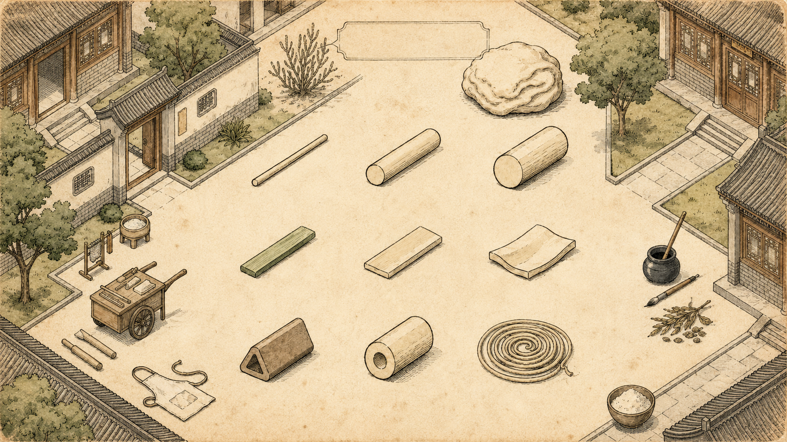

← Bitepedia

一面九形
THE NINE LANZHOU NOODLES
面团
Dough
毛细
Mao Xi · Hair Thin
二细
Er Xi · Standard Round
韭叶
Jiu Ye · Leek Leaf
薄宽
Bo Leng · Thin Flat
大宽
Da Kuan · Wide Ribbon
空心
Kong Xin · Hollow Center
一线天
Yi Xian Tian · Single Strand
九形一面 · 食客自取
Nine shapes, one dough, shaped to taste
← Back to 兰州牛肉面